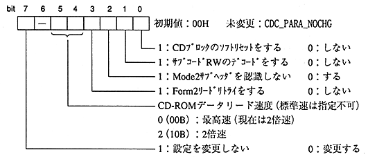

Title | Function | Function Name [SR] | No |
Format Sint32 CDC_CdInit (Sint32 iflag, Sint32 stnby, Sint32 ecc, Sint32 retry) Input iflag: Initialization flag (lower 8 bits are valid) st stnby: Standby time (lower 16 bits are valid) : ecc: ECC count (lower 8 bits are valid) retry: Number of retries (lower 8 bits are valid) Output None Function value Returns an error code. End flag ESEL flag (valid only at software reset, only cleared to 0) Function Initializes the CD block and pauses the CD drive at the current position.
- (1) Initialization flag

(A) Recognition of Mode 2 subheader is used for correction processing during CD-ROM decoding. Selector is always Recognizes the Mode2 subheader. (E.g., determining aperture and sector length conditions) (B) If Form 2 read retry is not performed, data will be output even if there is an error. (C) The CD-ROM data read speed is switched when the 〈PAUSE〉 status is entered. During playback of the CD-DA area Standard speed will be automatically set. When the CD-ROM area is entered, the original speed is restored.(2) Soft reset …… Please refer to “5.5 Initializing CD block”
 | (a) When soft resetting, wait about 3ms in this function, Ignoring the CMOK flag and issuing the command |